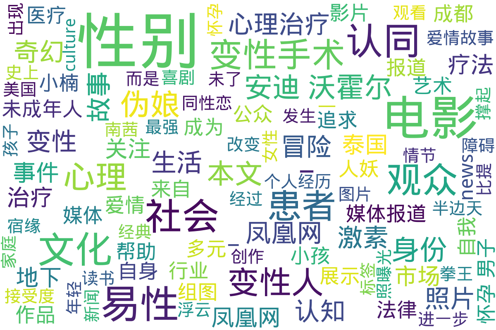

凤凰网
该目录来自凤凰网，收录了一系列与多元性别相关的内容。第一篇报道《史上最强伪娘照曝光(组图)》展示了多样的伪娘形象，并引发了对跨性别文化的关注。第二篇讨论了安迪·沃霍尔的艺术生涯，特别是他与性别和边缘文化的关联，反映了他对多元文化表现的探索。这些内容不仅关注个体经历，还讨论了社会对跨性别者文化的接受度。
随后，文章关于泰国一名年仅9岁的小孩打激素的报道，突显了跨性别者在自我认同过程中所面临的挑战和医疗难题。接下来，关于易性癖（变换性别癖）的文章分别讨论了其定义及心理治疗方法，揭示了这一群体所面临的心理困扰和治疗支持。
报道中也涉及了未成年变性手术的法律事件，以及第一位怀孕男性的生活经历，进一步展示了多元性别个体的生存现状与家庭生活。此外，《人妖宿缘未了的爱情故事》电影的讨论，结合了跨性别与爱情主题，展示了这一领域在影视作品中的表现。最后，文章《性别都是浮云：变性人撑起半边天》强调了性别流动性和变性人在社会中的重要性，促使人们重新思考性别认同的界限。
标签: 多元性别, 跨性别文化, 伪娘, 安迪·沃霍尔, 性别认同, 易性癖, 心理治疗, 未成年人变性手术, 怀孕男性, 电影, 性别流动性, 社会认同
总计 10 篇内容
🌐 网页
2024
本文探讨了近年来中国电影市场的变化，分析了观众观看电影意愿下降的原因。通过实例和数据，文章指出观众的观影习惯正在发生改变，尤其是随着短视频和网络内容的普及，越来越多的观众选择在家观看内容，而不愿进影院。文章提到，2024年国庆档票房的低迷，以及过去暑期档的失利，反映了观众对电影质量和话题性的挑剔。此次研究还提及了许多观众对于老龄化电影创作者的厌倦，认为如今的电影缺乏新意。最后，文中多次强调市场需要想要与年轻观众产生共鸣的新鲜创作，并且指出电影市场的冷静也是行业内部竞争和自我提升的好时机。
2020
本文讨论了泰国一名年仅9岁的小孩因其性别认同而打激素进行身体过渡的故事。文章强调了这位小孩在生活中面对的挑战和社会的偏见，同时展现了他勇敢追求自我认同的决心。文章中提到，这名小孩每天需要接受三次激素治疗，这不仅反映了他对自身身份的坚定信念，也揭示了跨性别者在求身份认同过程中所面临的医疗难题。故事发生在泰国，由凤凰网于2020年4月14日发布，并在社交媒体上引起了广泛关注。
2019
pit_经典奇幻喜剧冒险电影人妖宿缘未了的爱情故事结局美好吗查看摘要
这是一篇关于经典奇幻喜剧冒险电影《人妖宿缘未了的爱情故事》的资讯文章，探讨了影片的情节和主题，尤其是跨性别与爱情之间的关系。文章中提到，这部电影以其独特的奇幻元素和冒险情节吸引了大量观众，至今播放量已达到142.9万。文章包含了一些重要的图片，并提供了媒体声明，强调所有作品内容均由用户上传，平台仅提供信息存储空间服务。此外，文章在内容的末尾附上了与影片相关的重要标签，如“跨性别”，“爱情”，“电影”，“奇幻”和“冒险”。
2015
culture_在地下电影和造星工厂，重新发现安迪·沃霍尔_-_读书-_凤凰网查看摘要
本文讨论了安迪·沃霍尔作为地下电影人的艺术生涯，以及他在好莱坞文化中的影响与对名人的崇拜与造星活动。文章通过介绍安迪·沃霍尔的个人经历，展现了他从追星者到成为文化造星者的过程，以及他的实验性电影作品中所反映的性与边缘文化议题。文中提到的多个作品，如《吻》（Kiss）、《雀西女孩》（Chelsea Girl）等，展示了他对极简电影叙事的探索，以及如何通过重复与记录细微的日常变化，促使观众思考人与人之间的亲密关系。在安迪·沃霍尔的“工厂”期间，他也培养了许多著名的地下演员，特别是异装者Mario Montez，进一步对边缘文化的探讨进行了实践。文章最后提及了2015年在多伦多展出的一次专题展览，重现了安迪·沃霍尔的艺术影响力及其对现代文化的贡献。
news_成都：实习医生为15岁少年摘除睾丸变性被批捕查看摘要
该文件报道了一个涉及未成年变性手术的法律事件。在2015年9月，成都的实习医生田某被逮捕，原因是他在没有医师执业证书的情况下，为一名15岁少年小楠进行了睾丸摘除手术，导致小楠受到了二级重伤。小楠一直以来希望能成为女性，并长期服用抑制雄性激素的药物。这一事件引发了公众对变性手术法律法规的关注及对未成年人权益的保护讨论。根据卫生部的相关规定，进行变性手术的患者年龄必须大于20岁，并且需要经过严格的心理、精神评估。该事件反映出医疗行业中存在的伦理和法律问题，以及对未成年人变性需求的敏感性和复杂性。
2012
yue_性别都是浮云变性人撑起半边天_-_音乐-_凤凰网查看摘要
该文件是来自凤凰网的一篇文章，标题为《性别都是浮云：变性人撑起半边天》。文章主要描述了变性人在社会中的位置和角色，探讨了性别身份的流动性与社会认同。文中提到了变性人拳王巴林亚的例子，以及他在泰国影片《美丽拳王》发布会上出现的情况。这不仅展示了变性人在体育界的成就，也反映出他们在媒体与公众视野中的能见度。文章通过讲述变性人的故事，试图打破对性别的传统认知，强调性别并不是一个固定的身份，而是一种可以流动和转变的状态。同时，该文件也包含了一些与变性人相关的标签和源链接，提供了进一步阅读的机会。
2010
culture_史上最强伪娘照曝光_组图__-_读书-_凤凰网查看摘要
本文是来自凤凰网的一篇报道，标题为《史上最强伪娘照曝光(组图)》，发布于2010年6月29日。文章中包含了一组关于伪娘的照片，展示了不同风格和装扮的伪娘形象，强调了他们在文化中的表现与社会的接受度。作者王勇通过这组照片，引发了公众对跨性别文化和伪娘现象的关注。文章内容反映了当时社会对跨性别者的认知及其文化表现，同时也借助图片传达了伪娘群体在自我表达和认同过程中的多样性。
health_你知道什么是“易性癖”吗_图__健康频道查看摘要
本文讨论了易性癖（亦称为变换性别癖或性别转换症），一种心理状态，其中个人在心理上否定自己的性别，认为自己的生理性别与性别认同不符。文章详细描述了易性癖的定义、成因、表现及与其他性别相关症状（如同性恋和异装癖）的区别。易性癖患者对自身生理性别的强烈不满，可能会追求通过外科手术或激素治疗来改变自己的性别特征。相比于异装癖，易性癖者在穿着异性服装时并不追求性兴奋，而是源于心理上的需求。最后，文章警告易性癖患者常常面临的心理挑战，如抑郁与自杀倾向。
health_你知道什么是“易性癖”吗_图__健康频道_-_凤凰网查看摘要
本文讨论了易性癖的心理治疗方法，指出易性癖是一种性别身份识别障碍，患者可能在心理上经历痛苦。文章详细介绍了四种治疗方式，包括支持性心理治疗、认知领悟疗法、疏导疗法和变性手术。支持性心理治疗强调医患关系的重要性，帮助患者表达内心的痛苦、获得理解和关心。认知领悟疗法则鼓励患者确认自身问题、接受现实和调整情绪。疏导疗法帮助患者认识易性癖的成因和危害，并鼓励患者建立勇气和信心。变性手术虽能某种程度上平衡患者的心理状态，但也须谨慎对待，由于可能出现术后悔意，需依赖心理治疗作为更为可靠的支持。
2008
这篇文章来自凤凰网，报道了美国一位怀孕男子比提的生活照片与故事。比提在变性手术后与恋人南茜结婚，并为帮助南茜解决不孕问题而怀上了孩子。文章中提到，比提原为女性，经过变性手术后怀孕，成为第一位在美怀孕的变性男性。文章包括了比提和南茜的生活照片，以及对于他们未来孩子的期待。这则新闻不仅关注了比提的个人经历，也反映了多元性别人士的生存现状及家庭生活。
词云图

目录及摘要为自动生成，仅供索引和参考，请修改 .github/ 目录下的对应脚本、模板或对应文件以更正。